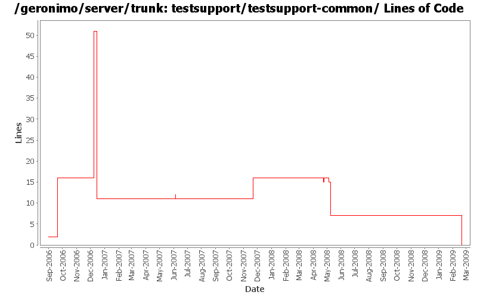

[root]/testsupport/testsupport-common
 src
(0 files, 0 lines)
src
(0 files, 0 lines)
 main
(0 files, 0 lines)
main
(0 files, 0 lines)
 java
(0 files, 0 lines)
java
(0 files, 0 lines)
 org
(0 files, 0 lines)
org
(0 files, 0 lines)
 apache
(0 files, 0 lines)
apache
(0 files, 0 lines)
 geronimo
(0 files, 0 lines)
geronimo
(0 files, 0 lines)
 testsupport
(0 files, 0 lines)
testsupport
(0 files, 0 lines)
 test
(0 files, 0 lines)
test
(0 files, 0 lines)
 java
(0 files, 0 lines)
java
(0 files, 0 lines)
 org
(0 files, 0 lines)
org
(0 files, 0 lines)
 apache
(0 files, 0 lines)
apache
(0 files, 0 lines)
 geronimo
(0 files, 0 lines)
geronimo
(0 files, 0 lines)
 testsupport
(0 files, 0 lines)
testsupport
(0 files, 0 lines)

| Author | Changes | Lines of Code | Lines per Change |
|---|---|---|---|
| Totals | 26 (100.0%) | 78 (100.0%) | 3.0 |
| prasad | 4 (15.4%) | 39 (50.0%) | 9.7 |
| djencks | 5 (19.2%) | 17 (21.8%) | 3.4 |
| jdillon | 9 (34.6%) | 10 (12.8%) | 1.1 |
| gdamour | 1 (3.8%) | 5 (6.4%) | 5.0 |
| hogstrom | 2 (7.7%) | 3 (3.8%) | 1.5 |
| kevan | 2 (7.7%) | 2 (2.6%) | 1.0 |
| dwoods | 2 (7.7%) | 1 (1.3%) | 0.5 |
| dain | 1 (3.8%) | 1 (1.3%) | 1.0 |
GERONIMO-4538 Move stuff around so framework is self contained and builds the framework server. No groupId changes in this revision in case people dont like this change
0 lines of code changed in 3 files:
Move some dep versions to dm
Add some sanity checks to selenium client muck
1 lines of code changed in 1 file:
Some updates to use the latest selenium-m-p SNAPSHOT
0 lines of code changed in 1 file:
(GERONIMO-3985) Use SLF4J as the primary logging facade for Geronimo
4 lines of code changed in 1 file:
Drop legal files, these are now included via m-r-r-p
0 lines of code changed in 1 file:
Update LICENSE and NOTICE files. Merge from 2.1 branch
1 lines of code changed in 1 file:
upgrade trunk to 2.2-SNAPSHOT
1 lines of code changed in 1 file:
When distributing w/o the explicit selection of a target, we only distribute
to the first target returned by DeploymentManager. This first target is
the default target, or configuration store, and users can specify an abstract
name query (in EditableKernelConfigurationManager) to identify this default
target.
Now that multiple configuration stores per server are better handled
out-of-the-box, we can re-enable the "clustered" configuration stores.
Also, let's more the rmock dependency to testsupport-common so that we
can use it from all our tests.
This fixes GERONIMO-3612 - When no target configuration store is explicitly
specified while installing a configuration, the configuration should be
installed to a default configuration store
5 lines of code changed in 1 file:
* updated copyright date to 2007
1 lines of code changed in 1 file:
Changed trunk to 2.1-SNAPSHOT
1 lines of code changed in 1 file:
GERONIMO-3339 Upgrade to xmlbeans 2.3.0, improve dir structure
2 lines of code changed in 1 file:
undo last changes, as the spec hasn't been published yet...
0 lines of code changed in 1 file:
make sure we use the 1.0 released spec
1 lines of code changed in 1 file:
Updating from stax-api to geronimo-stax-api_1.0_spec to correct incorrect method signatures
2 lines of code changed in 1 file:
(GERONIMO-2725) Remove geronimo-qname_1.1_spec dependencies, qname is in javase 5 which is required to run 2.0
5 lines of code changed in 1 file:
* moved selenium from testsupport-common to testsupport-selenium
* in testsuite, changed dependency from testsupport-common to testsupport-selenium
* testsupport-common now comes by way of transitive dependency.
0 lines of code changed in 1 file:
* moved repository needed to build selenium from testsuite to testsupport
21 lines of code changed in 1 file:
* moved ExtendedSelenium and SeleniumSupport to TestSupport
* it took along with it the TestNG dependency.
* TestNG dependency no longer needs to be specified in testsuite poms.
17 lines of code changed in 1 file:
Changed version to 2.0-SNAPSHOT
1 lines of code changed in 1 file:
GERONIMO-2415 add xmlbeans test support class
15 lines of code changed in 1 file:
(GERONIMO-2352) Hooking up testsupport to the main build
Moved modules/geronimo-testsupport to testsupport/testsupport-common & hook up testsupport-common as a default test dep for all modules
0 lines of code changed in 4 files: